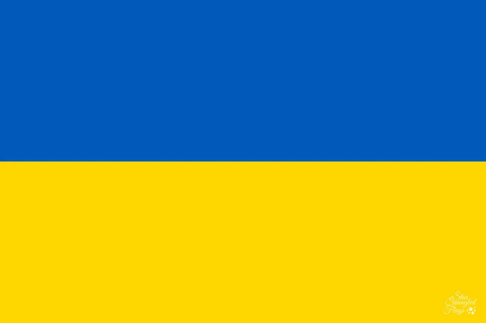

About Me
My name is Valeriia Lebedieva. I was born in Ukraine and love learning new things. I enjoy working in web development and exploring innovative solutions for dynamic web design. Traveling and spending time with my family is very important to me.

Ukraine

Ukraine is located in Eastern Europe. It is known for its rich culture, history, and beautiful landscapes. Ukrainian cuisine is famous for its variety of flavors, and the country is known for its agricultural exports.
Official flag of Ukraine